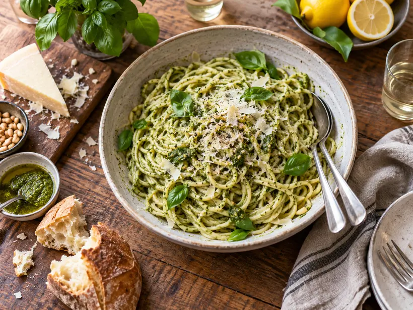

The everyday, elevated
STOP BY OUR
KITCHEN
From our home kitchen to your table, this is pasta made for passing around. Bright, saucy, and best enjoyed with a little bread on the side.
A full bowl in 10 minutes
Cold-blended for freshness
Made with real ingredients
